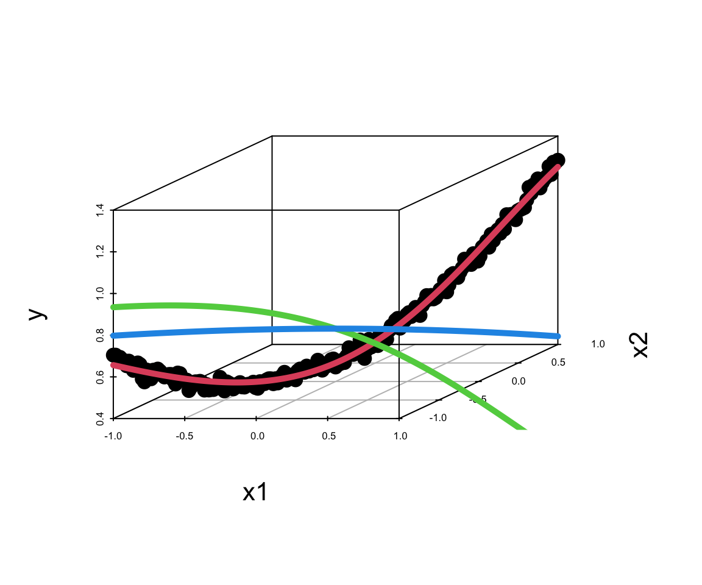
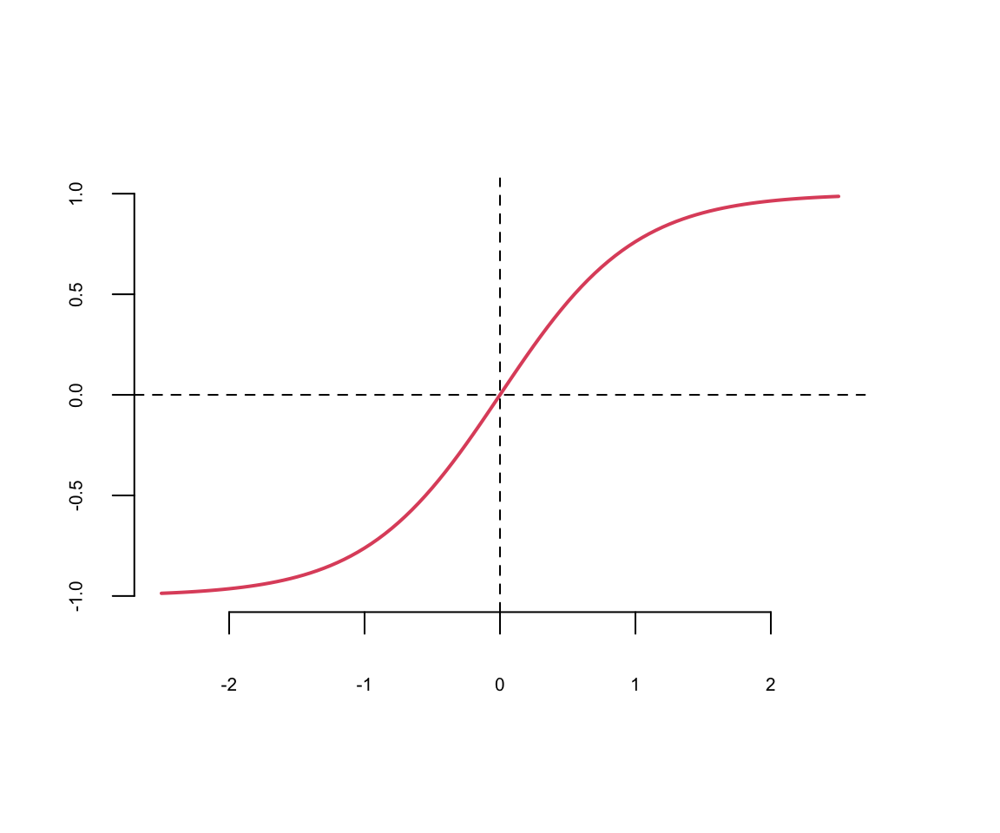
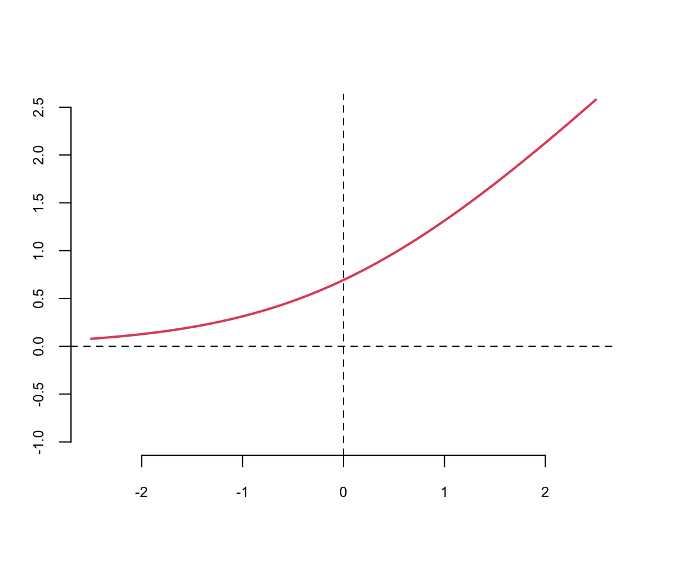
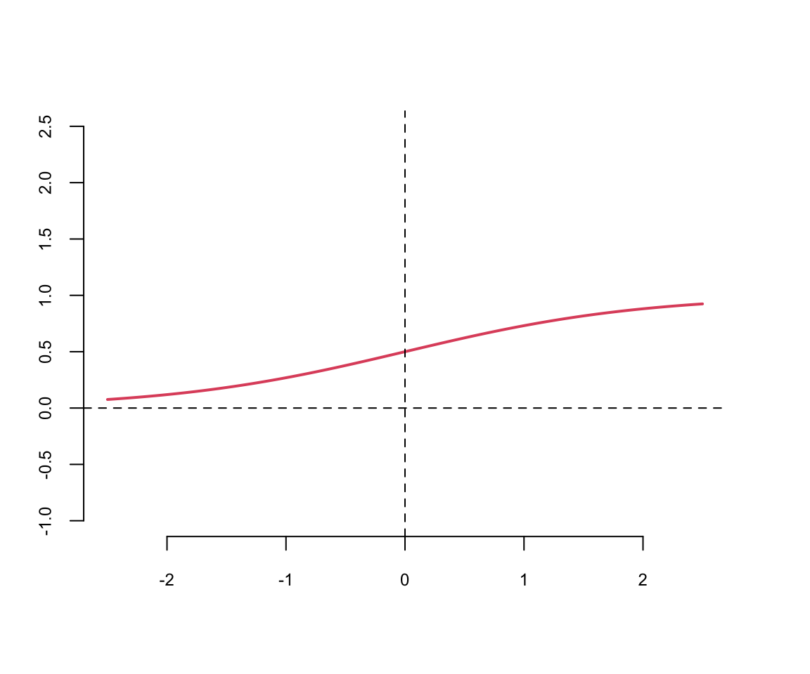

20 Neural Networks
The goal of this section paper is to provide an overview of of Deep Learning (DL) for statisticians. To do this, we have discussed the model estimation procedure and demonstrated that DL is an extension of a generalized linear model. One goal of statistics is to build predictive models along with uncertainty and to develop an understanding of the data generating mechanism. Data models are well studied in statistical literature, but often do not provide enough flexibility to learn the input-output relations. Closed box predictive rules, such as trees and neural networks, are more flexible learners. However, in high-dimensional problems, finding good models is challenging, and this is where deep learning methods shine. We can think of deterministic DL model as a transformation of high dimensional input and outputs. Hidden features lie on the transformed space, and are empirically learned as opposed to theoretically specified.
Although DL models have been almost exclusively used for problems of image analysis and natural language processing, more traditional data sets, which arise in finance, science and engineering, such as spatial and temporal data can be efficiently analyzed using deep learning. Thus, DL provides an alternative for applications where traditional statistical techniques apply. There are a number of areas of future research for Statisticians. In particular, uncertainty quantification and model selection, such as architecture design, as well as algorithmic improvements and Bayesian deep learning. We hope this review will make DL models accessible for statisticians.
In recent yeats neural networks and deep learning has re-emerged as a dominant technology for natural language processing (NLP), image analysis and reinforcement learning. The majority of applications use feed-forward neural network architectures such as convolutional neural networks and transformers. In this chapter we will focus on the feed-forward neural networks and their applications to regression and classification problems. We will also discuss the computational aspects of deep learning and its implementation in R and Python.
20.1 Introduction
Our goal is to provide a review of deep learning methods which provide insight into structured high-dimensional data. Rather than using shallow additive architectures common to most statistical models, deep learning uses layers of semi-affine input transformations to provide a predictive rule. Applying these layers of transformations leads to a set of attributes (or, features) to which probabilistic statistical methods can be applied. Thus, the best of both worlds can be achieved: scalable prediction rules fortified with uncertainty quantification, where sparse regularization finds the features.
Deep learning is one of the widely used machine learning method for analysis of large scale and high-dimensional data sets. Large-scale means that we have many samples (observations) and high dimensional means that each sample is a vector with many entries, usually hundreds and up.
Machine learning is the engineer’s version of statistical data analysis. Major difference between ML and statistics is that ML focuses on practical aspects, such as computational efficiency and ease of use of techniques. While statistical analysis is more concerned with rigorousness of the analysis and interpretability of the results.
Deep learning provides a powerful pattern matching tool suitable for many AI applications. Image recognition and text analysis are probably two of the deep learning’s most successful. From a computational perspective, you can think of an image or a text as a high dimensional matrices and vectors, respectively. The problem of recognizing objects in images or translating a text requires designing complex decision boundaries in the high dimensional space of inputs.
Although, image analysis and natural language processing are the applications where deep learning is the dominating approach, more traditional engineering and science applications, such as spatio-temporal and financial analysis is where DL also showed superior performance compared to traditional statistical learning techniques (N. Polson, Sokolov, and Xu 2021; N. G. Polson and Sokolov 2017, 2023; Dixon, Polson, and Sokolov 2019; Heaton, Polson, and Witte 2017; Sokolov 2017; Bhadra et al. 2021, 2021; Behnia, Karbowski, and Sokolov 2021; Nareklishvili, Polson, and Sokolov 2022a, 2022b, 2023; Wang, Polson, and Sokolov 2022; N. Polson and Sokolov 2020)
There are several deep learning architectures exist - each has its own uses and purposes. Convolutional Neural Networks (CNN) deal with 2-dimensional input objects, i.e. images and were shown to outperform any other techniques. Recurrent Neural Networks (RNN) were shown the best performance on speech and text analysis tasks.
In general, a neural network can be described as follows. Let \(f_1 , \ldots , f_L\) be given univariate activation functions for each of the \(L\) layers. Activation functions are nonlinear transformations of weighted data. A semi-affine activation rule is then defined by \[ f_l^{W,b} = f_l \left ( \sum_{j=1}^{N_l} W_{lj} X_j + b_l \right ) = f_l ( W_l X_l + b_l )\,, \] which implicitly needs the specification of the number of hidden units \(N_l\). Our deep predictor, given the number of layers \(L\), then becomes the composite map
\[ \hat{Y}(X) = F(X) = \left ( f_l^{W_1,b_1} \circ \ldots \circ f_L^{W_L,b_L} \right ) ( X)\,. \]
The fact that DL forms a universal “basis” which we recognize in this formulation dates to Poincare and Hilbert is central. From a practical perspective, given a large enough data set of “test cases”, we can empirically learn an optimal predictor. Similar to a classic basis decomposition, the deep approach uses univariate activation functions to decompose a high dimensional \(X\).
Let \(Z^{(l)}\) denote the \(l\)th layer, and so \(X = Z^{(0)}\). The final output \(Y\) can be numeric or categorical. The explicit structure of a deep prediction rule is then \[ \begin{aligned} \hat{Y} (X) & = W^{(L)} Z^{(L)} + b^{(L)} \\ Z^{(1)} & = f^{(1)} \left ( W^{(0)} X + b^{(0)} \right ) \\ Z^{(2)} & = f^{(2)} \left ( W^{(1)} Z^{(1)} + b^{(1)} \right ) \\ \ldots & \\ Z^{(L)} & = f^{(L)} \left ( W^{(L-1)} Z^{(L-1)} + b^{(L-1)} \right )\,. \end{aligned} \] Here \(W^{(l)}\) is a weight matrix and \(b^{(l)}\) are threshold or activation levels. Designing a good predictor depends crucially on the choice of univariate activation functions \(f^{(l)}\). The \(Z^{(l)}\) are hidden features which the algorithm will extract.
Put differently, the deep approach employs hierarchical predictors comprising of a series of \(L\) nonlinear transformations applied to \(X\). Each of the \(L\) transformations is referred to as a layer, where the original input is \(X\), the output of the first transformation is the first layer, and so on, with the output \(\hat Y\) as the first layer. The layers \(1\) to \(L\) are called hidden layers. The number of layers \(L\) represents the depth of our routine.
20.2 Motivating Example
We will start with applying a feed-forward neural network with one hidden layer to a problem of binary classification on a simulated data set. We start by generating a simple dataset shown in Figure below. The data is generated from a mixture of two distributions (Gaussian and truncated Gaussian). The red points are the positive class and the green points are the negative class. The goal is to find a model boundary that discriminates the two classes.
Let’s try to use a simple logistic regression model to separate the two classes.
# Fit a logistic regression model
fit = glm(label~x1+x2, data=as.data.frame(d), family=binomial(link='logit'))
# Plot the training dataset
plot(d[,2],d[,3], col=d[,1]+2, pch=16, xlab="x1", ylab="x2")
th = fit$coefficients
# Plot the decision boundary
abline(-th[1]/th[3], -th[2]/th[3], col=2)
We can see that a logistic regression could not do it. It uses a single line to separate observations of two classes. We can see that the data is not linearly separable. However, we can use multiple lines to separate the data.
plot(x1~x2, data=d,col=d[,1]+2, pch=16)
# Plot lines that separate once class (red) from another (green)
lines(x1, -x1 - 6); text(-4,-3,1)
lines(x1, -x1 + 6); text(4,3,2)
lines(x1, x1 - 6); text(4,-3,3)
lines(x1, x1 + 6); text(-3,4,4)
Now, we do the same thing as in simple logistic regression and apply logistic function to each of those lines
# Define sigmoid function
sigmoid = function(z) exp(z)/(1+exp(z))
# Define hidden layer of our neural network
features = function(x1,x2) {
z1 = 6 + x1 + x2; a1 = sigmoid(z1)
z2 = 6 - x1 - x2; a2 = sigmoid(z2)
z3 = 6 - x1 + x2; a3 = sigmoid(z3)
z4 = 6 + x1 - x2; a4 = sigmoid(z4)
return(c(a1,a2,a3,a4))
}Using the matrix notaitons, we have \[ z = \sigma(Wx + b), ~ W = \begin{bmatrix} 1 & 1 \\ -1 & -1 \\ -1 & 1 \\ 1 & -1 \end{bmatrix}, ~ b = \begin{bmatrix} 6 \\ 6 \\ 6 \\ 6 \end{bmatrix}, ~ \sigma(z) = \frac{1}{1+e^{-z}} \]
The model shown above is the first layer of our neural network. It takes a two-dimensional input \(x\) and produces a four-dimensional output \(z\) which is a called a feature vector. The feature vector is then passed to the output layer, which applies simple logistic regression to the feature vector. \[ \hat{y} = \sigma(w^Tz + b), ~ w = \begin{bmatrix} 1 \\ 1 \\ 1 \\ 1 \end{bmatrix}, ~ b = -3.1, ~ \sigma(z) = \frac{1}{1+e^{-z}} \]
The output of the output layer is the probability of the positive class.
# Calculate prediction (classification) using our neural network
predict_prob = function(x){
x1 = x[1]; x2 = x[2]
z = features(x1,x2)
# print(z)
mu = sum(z) - 3.1
# print(mu)
sigmoid(mu)
}We can use our model to do the predictions now
# Predict the probability of the positive class for a given point
predict_prob(c(0,0)) 0.71predict_prob(c(0,10)) 0.26The model generates sensible predictions, let’s plot the decision boundary to see how well it separates the data.
x1 = seq(-11,11,length.out = 100)
x2 = seq(-11,11,length.out = 100)
gr = as.matrix(expand.grid(x1,x2)); 10000 2yhat = apply(gr,1,predict_prob) 10000image(x1,x2,matrix(yhat,ncol = 100), col = heat.colors(20,0.7))
How about a regression model. We will use a one-layer neural network to fit a quadratic function. We simulate noisy data from the following model \[
y = 0.5 + 0.3x^2 + \epsilon, ~ \epsilon \sim N(0,0.02^2)
\] And use 3 hidden units in the first hidden layer and two units in the second hidden layer. The output layer is a single unit. We will use the hyperbolic tangent (tanh) activation function for all layers. The model is defined as follows
relu = function(x) max(0,x)
nn = function(W,f=relu) {
b0 = W[1]; w0=W[2:4];b1 = W[5]; w1 = W[6:8]
z0 = apply(b0 + outer(x,w0,'*'),1:2,f)
yhat = b1 + z0 %*% w1
return(list(yhat = yhat[,1],z0=z0))
}The hidden layer has three outputs (neurons) and uses the ReLu activation function. The output linear layer has a single output. Thus, the prediction yhat is generated as a linear model of the feature vector z0. The model has 8 parameters Let’s generate training data and fit the model. We will use the BFGS optimization algorithm to minimize the loss function (negative log-likelihood) of the model.
set.seed(99) #gretzky
nl = c(3,2)
params = c(0,rnorm(3),0,rnorm(3))
x = seq(-1,1,0.02)
y = 0.5 + 0.3*x^2 + rnorm(length(x),0,0.02)
loss = function(W) sum((nn(W)$yhat - y)^2)
res = optim(params, loss, method='BFGS')
res$par -0.24 1.39 -0.82 0.46 0.50 0.17 0.46 0.39The Figure 20.1 shows the quadratic function and the neural network model. The solid black line is the neural network model, and the dashed lines are the basis functions. The model fits the data well.
o = nn(res$par)
plot(x,y); lines(x,o$yhat, lwd=2)
lines(x,0.5+o$z0[,1],col=2, lwd=2, lty=2); lines(x,0.5+o$z0[,2],col=3, lwd=2, lty=2); lines(x,0.5+o$z0[,3],col=4, lwd=2, lty=2)
Let’s try the \(\tanh\) function
set.seed(8) #gretzky
params = c(0,rnorm(3),0,rnorm(3))
loss = function(W) mean((nn(W,f=tanh)$yhat - y)^2)
res = optim(params, loss, method='BFGS')
res$par -0.98 -0.23 0.83 -1.14 0.84 -0.65 0.59 0.53o = nn(res$par, f=tanh)
plot(x,y, ylim=c(0.4,0.95)); lines(x,o$yhat, lwd=2);
lines(x,0.5*o$z0[,1]+0.9, lwd=2, lty=2, col=2); lines(x,0.5*o$z0[,2]+0.9, lwd=2, lty=2, col=3); lines(x,0.5*o$z0[,3]+0.9, lwd=2, lty=2, col=4)
Notice that we did not have to explicitly specify that our model need to have a quadratic term, the model learned it from the data. This is the power of deep learning. The model is able to learn the structure of the data from the data itself.
We can apply the same approach to the interactions, say the true model for the data as follows \[ y = 0.5 + 0.1x_1 + 0.2x_2 + 0.5x_1x_2+ \epsilon, ~ \epsilon \sim N(0,0.02^2) \] We can use the same model as above, but with two input variables. The model will learn the interaction term from the data.
set.seed(99) #ovi
x1 = seq(-1,1,0.01)
x2 = x1
y = 0.5 + 0.1*x1 + 0.2*x2 + 0.5*x1*x2 + rnorm(length(x1),0,0.02)
library("scatterplot3d")
s3d = scatterplot3d(x1,x2,y, pch=16)
x = cbind(x1,x2)
nn = function(W,f=relu) {
b0 = W[1]; w0 = W[2:5]; b1 = W[6]; w1 = W[7:8]
w0 = matrix(w0,nrow=2)
z0 = apply(b0 + x%*%w0,1:2,f)
yhat = b1 + z0 %*% w1
return(list(yhat = yhat[,1],z0=z0))
}
W = c(0,rnorm(4),0,rnorm(2))
loss = function(W) sum((nn(W, f=tanh)$yhat - y)^2)
res = optim(W, fn=loss, method='BFGS')
res$par 0.78 0.50 -1.39 0.63 -0.94 -2.06 -2.88 6.78o = nn(res$par, f=tanh)
s3d$points3d(x1,x2,o$yhat, col=2, type='l', lwd=5)
s3d$points3d(x1,x2,o$z0[,1], col=3, type='l', lwd=5)
s3d$points3d(x1,x2,o$z0[,2], col=4, type='l', lwd=5)
Effectively, you can think of the neural network as a flexible function approximator, equivalent to a nonparametric regression approach which learns the basis functions from data. The model can learn the structure of the data from the data itself. This is the power of deep learning.
20.3 Activation Functions
The last output layer of a neural network has sigmoid activation function for binary output variable (classification) and no activation function for continuous output variable regression. The hidden layers can have different activation functions. The most common activation functions are the hyperbolic tangent function and the rectified linear unit (ReLU) function.
A typical approach is to use the same activation function for all hidden layers. The hyperbolic tangent function is defined as \[ \tanh(z) = \frac{e^z - e^{-z}}{e^z + e^{-z}} \] Notice, that the hyperbolic tangent function is a scaled version of the sigmoid function, with \(\tanh(0) = 0\). It is a smooth function which is differentiable everywhere. However,




Typically \(\tanh\) is preferred to the sigmoid function because it is zero-centered. The major drawback of sigmoid and \(\tanh\) functions is that they saturate when the input is very large or very small. When we try to learn the weights of the network, the optimisation algorithms makes small steps in the space of the parameters and when the weights are large the small changes won’t effect the values of the layers’ outputs and optimisation will “stagnate”.
This means that the gradient of the function is very small, which makes learning slow. The ReLU function is defined as
The ReLU function is defined as \[ \text{ReLU}(z) = \max(0,z) \] The ReLU function is a piecewise linear function which is computationally efficient and easy to optimize. The ReLU function is the most commonly used activation function in deep learning. The ReLU function is not differentiable at \(z=0\), but it is differentiable everywhere else. The derivative of the ReLU function is \[ \text{ReLU}'(z) = \begin{cases} 0 & \text{if } z < 0 \\ 1 & \text{if } z > 0 \end{cases} \]